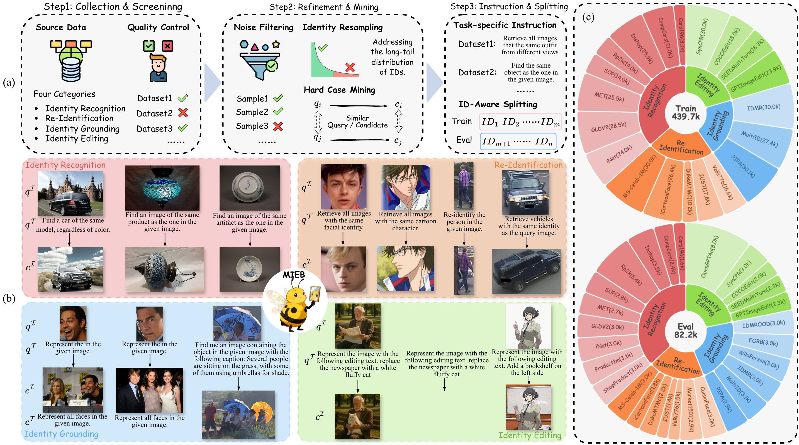
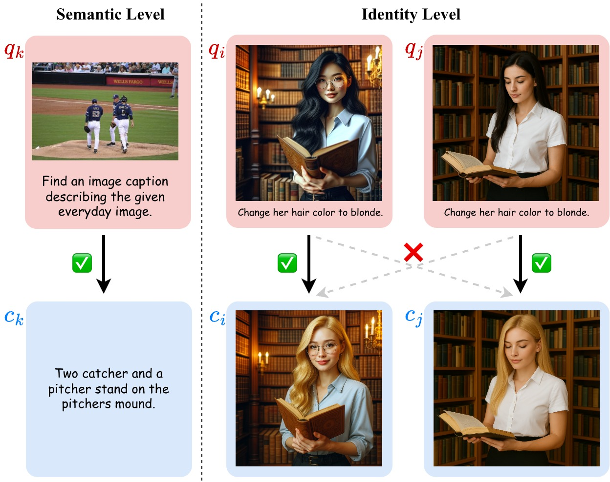

CVPR 2026
Illuminating Visual Identity in Universal Multimodal Embeddings
We study a missing capability in universal multimodal embeddings: visual identity discrimination (VisID). We introduce MVEB, a benchmark and training framework that improves identity-level retrieval while keeping strong general multimodal performance.

Abstract
Visual Identity Is Missing in Existing UME Training
Universal Multimodal Embeddings (UMEs) unify diverse modalities and tasks into a shared representation space, but visual identity discrimination remains underexplored.
To bridge this gap, we propose a unified VisID formulation and introduce MVEB, curated from real-world and synthetic data to support both evaluation and training.
We further design an identity-aware learning framework that jointly optimizes general multimodal alignment and identity-level discrimination.
Benchmark
Comprehensive Coverage for Identity-Centric Evaluation
Identity Recognition
Verify whether two inputs depict the same real-world entity.
Re-Identification
Match a target identity across viewpoint and condition shifts.
Identity Grounding
Ground the same identity in complex scenes via reference cues.
Identity Editing
Preserve identity under text-guided generative editing.
Data Curation Pipeline
The MVEB curation process includes collection and screening, refinement with balancing and hard-negative mining, and identity-aware splitting to reduce train-test identity overlap.

Method
Identity-Aware Training Compatible with Standard UME Pipelines
Semantic-Aware Sampling
Preserve standard in-batch contrastive learning for generic multimodal alignment.
Identity-Aware Sampling
Pre-schedule batches to avoid false negatives by controlling identity collisions across mini-batches.
Structured Hard Negatives
Inject hard cases from predefined relations to enforce fine-grained identity boundaries.
Core Outcome
Strong Identity Discrimination Gains
Experiments show clear improvements on identity-centric evaluation while retaining competitive general multimodal capability.
Benchmark Scale
28
Sub-datasets
522K
Samples
Resources
Download the paper and inspect curation/benchmark visualizations from the links below.
Citation
Cite MVEB
@inproceedings{cao2026mveb,
title={Illuminating Visual Identity in Universal Multimodal Embeddings},
author={Cao, Jiawei and Feng, Junyi and Hua, Jiashen and Huang, Ziheng and Deng, Bing and Wu, Kaijie and Gu, Chaochen and Ye, Jieping},
booktitle={Proceedings of the IEEE/CVF Conference on Computer Vision and Pattern Recognition},
year={2026}
}